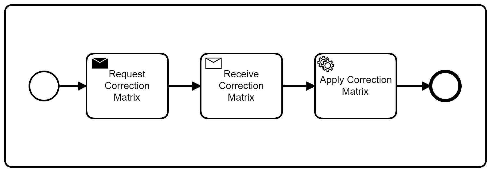
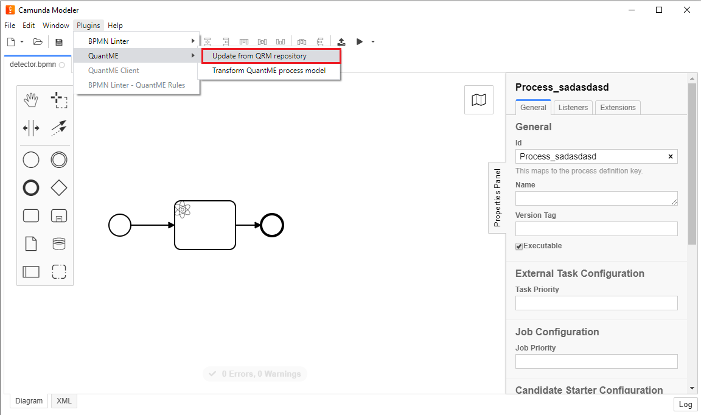
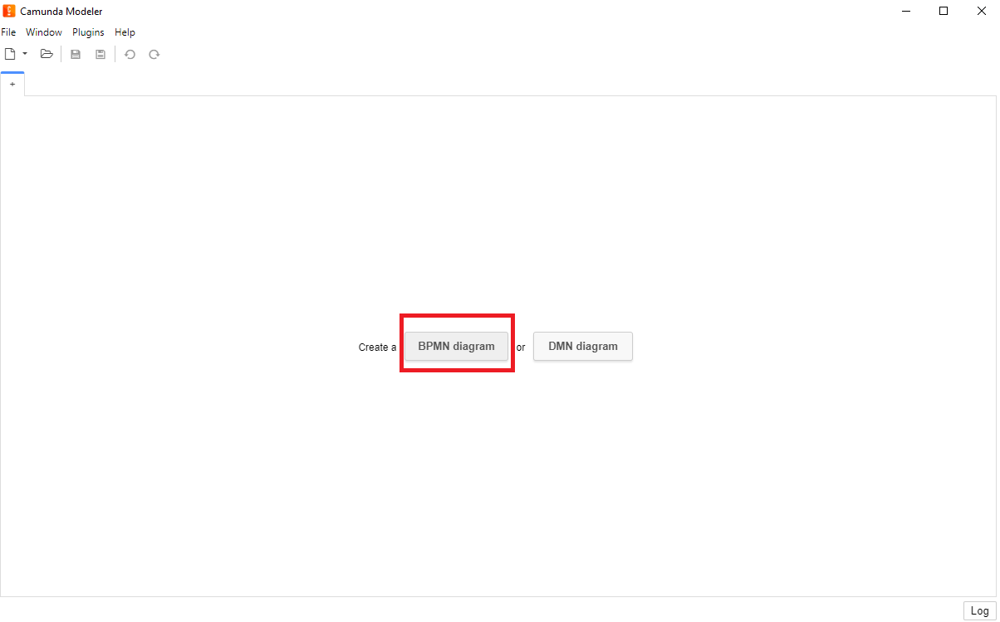
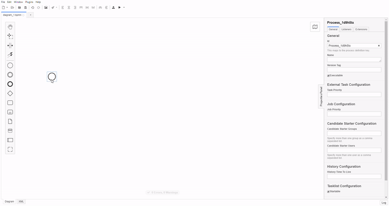
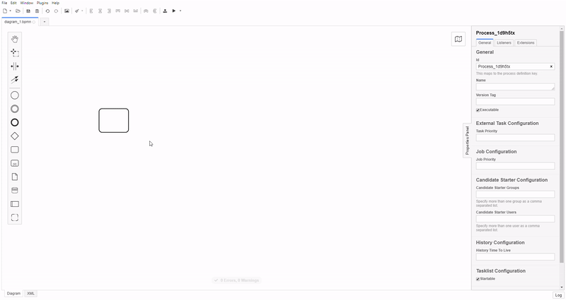
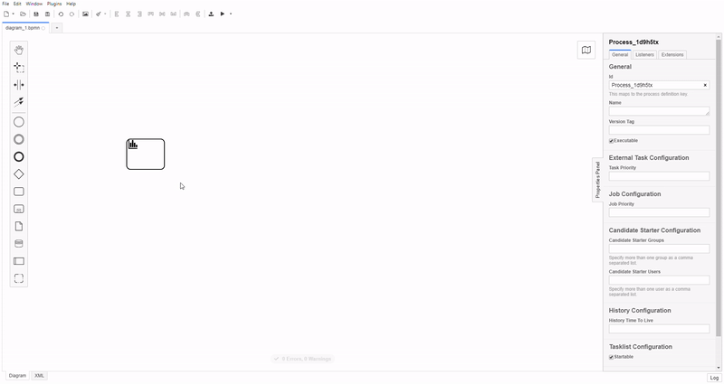
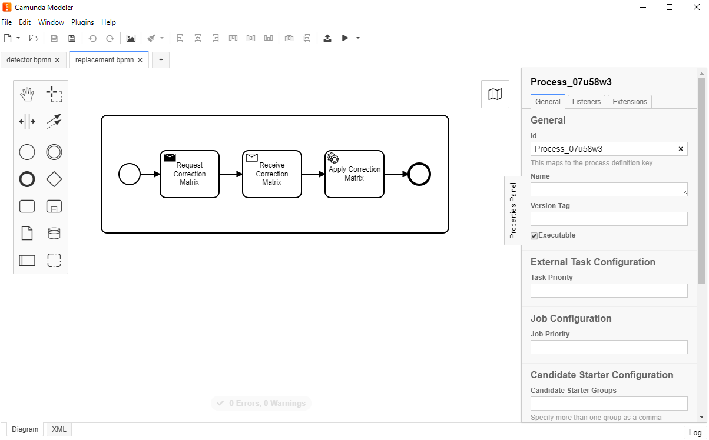
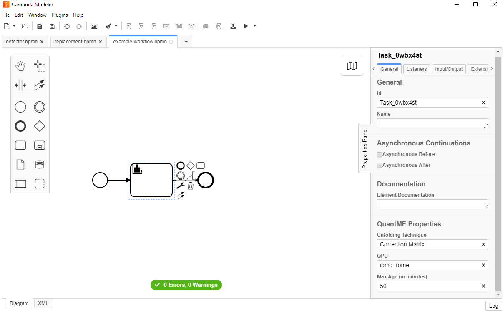

QuantME User Guide
The Quantum Modeling Extension (QuantME) is a technology-independent modeling extension for imperative workflow languages to model quantum computations in workflow models. Thereby, it provides explicit modeling constructs for the execution of quantum circuits, as well as for different frequently occurring pre- and post-processing tasks, abstracting from the technical and mathematical details. Thus, it eases the modeling of workflows executing quantum algorithms and increases the reusability of implementations for the various tasks.
QuantME currently comprises three repositories:
- QuantME-Quantum4BPMN: A BPMN 2.0 extension supporting QuantME to integrate quantum computing into workflow modeling and execution.
- QuantME-TransformationFramework: A modeling solution for quantum workflows based on Quantum4BPMN and a framework to transform them into native BPMN 2.0 workflows to retain their portability.
- QuantME-UseCases: A repository comprising multiple use cases how to model, transform, and execute quantum workflows using QuantME
QuantME Replacement Models (QRMs)
QuantME Replacement Models (QRMs) define workflow fragments that can be used to transform QuantME workflows to workflows using only native modeling constructs of the host workflow language. Therefore, they define a detector that defines which kind of QuantME task can be replaced by the QRM and a replacement fragment containing the workflow fragment to replace the matching QuantME tasks. In the following, both constructs are introduced and it is shown how they can be created and used with the QuantME modeling and transformation framework.
Detector
The detector part of a QRM is a BPMN diagram, defining which QuantME tasks can be replaced by the QRM. Therefore, they contain exactly one QuantME task with a set of properties. An example detector can be found here.
The important part of the detector is listed bellow:
<bpmn:process id="Process_03e1olx" isExecutable="true">
<quantme:readoutErrorMitigationTask id="Task_0z5udr0" unfoldingTechnique="Correction Matrix" qpu="ibmq_rome, ibmq_london" maxAge="*" />
</bpmn:process>
The detector defines a quantme:readoutErrorMitigationTask, and thus, can be used to replace QuantME tasks of this type in QuantME workflows.
Details about this matching process can be found in the Detector Task Matching section bellow.
Alternative Properties
Alternative properties are sets of properties of QuantME tasks for which exactly one property has to be defined.
For example, the quantme:quantumCircuitLoadingTask defines the two alternative properties quantumCircuit and url.
This allows to specify alternative possibilities to load the quantum circuit into the workflow.
However, if none of the properties is set, it is not possible to load the quantum circuit successfully.
In the same way, if both properties are set, it is unclear which circuit to use.
Therefore, exactly one of these alternative properties has to be set for each task in a QuantME workflow.
In the detector, it is possible to set values for multiple alternative properties if the replacement fragment can handle different alternatives. However, in contrast to all other properties, it is also possible to leave alternative properties empty if at least one of them is set.
There are currently two QuantME task types using alternative properties:
quantme:quantumCircuitLoadingTask: The propertiesquantumCircuitandurlare alternativesquantme:oracleExpansionTask: The propertiesoracleCircuitandoracleURLare alternatives
Detector Task Matching
A detector has to define all properties of the contained QuantME task, except for alternative properties, for which at least one property has to be set. Thereby, for each property there are three different ways to define a value:
- Exactly one value, which means the detector only matches QuantME tasks that define exactly the same value for this property (see
unfoldingTechniquein the XML snipped above). - A list of possible values, which means the detector matches all QuantME tasks that have one of these values defined for this property (see
qpuin the XML snipped above). - A wildcard, which means the detector matches all QuantME tasks independent of their value for this property (see
maxAgein the XML snipped above)
Thus, the detector matches a QuantME task, if all properties can be matched successfully, and then the replacement fragment can be used to replace the matched tasks in a QuantME workflow during transformation.
Note: If a QuantME task in a QuantME workflow does not define an optional property, this matches each detector independent of its value for this property.
Replacement Fragment
As the detector, the replacement fragment part of a QRM is also a BPMN diagram, defining a workflow fragment implementing the functionality to replace QuantME tasks matching the detector. An example replacement fragment can be found here, which is visualized below:

First, the required correction matrix is requested by a send task, then it is received by a receive task, and finally, the correction matrix is applied to the input data which is passed to the subprocess by a variable.
Note: Currently, only one activity element is supported in replacement fragments. Therefore, if the implementation of the QuantME task from the detector requires more than one task, please use a subprocess and wrap each required task into it.
Data Handling
When modeling a QRM, the data flow within the replacement fragment can be modeled arbitrarily.
However, often the replacement fragment must be configured depending on the property values of the QuantME task that is replaced by it.
For example, a QRM could be implemented for a quantme:quantumCircuitLoadingTask to enable loading circuits from arbitrary URLs.
Therefore, the url property in the detector is set to a wildcard (see above).
However, after replacing a task by this QRM, the value of the url property of the replaced task must be available in the replacement fragment to enable loading the correct quantum circuit.
QRM Repositories
In the following the structure of a QRM repository as well as its configuration and usage is shown.
Configuration
The QRM repository must be a publicly accessible Github repository.
It can be configured using the configuration file.
Therefore, githubUsername should be used to configure the username or organisation name under which the Github repository is located.
Furthermore, githubRepositoryName has to specify the name of the Github repository.
Finally, githubRepositoryPath can be used to specify a subfolder in the Github repository containing the QRMs.
It not set, the root folder is used to retrieve the QRMs.
Another possibility to configure the QRM repository is using environment variables (QRM_USERNAME, QRM_REPONAME, QRM_REPOPATH) when starting the framework or by updating the repository via the REST API.
Structure
The QRM repository can contain an arbitrary number of QRMs, each of which has to be located in a separate folder in the Github repository. In the following, an example QRM repository containing three QRMs is shown:

Each of the folders has to contain at least the two files detector.bpmn and replacement.bpmn, which represent the QRM.
If one of the two files is missing or contains invalid content, the QRM is ignored during transformation.
Additionally, other files can be added to the folders, e.g., a readme file describing the QRM:

Updating the QRM repository
When starting the QuantME Modeling and Transformation Framework, the QRM repository is loaded once.
However, if the repository is changed during runtime of the framework, the QRMs have to be reloaded.
For this, use the Plugins menu entry, go to QuantME, and click on the Update from QRM repository button:

If the defined Github username and repository name are invalid and result in an error when loading the QRMs, a notification is displayed in the modeler and the configuration should be fixed.
Environment Variables
In the following, all environment variables that can be used to customize the QuantME Modeling and Transformation Framework are summarized.
Overview
-
PORT(default: 8081): The port to run the REST API on. -
HEADLESS(default: false): If set to true, the framework is executed without displaying the UI. This can for example be used if only the API is required and not the graphical modeler. -
QRM_USERNAME(default: ' '): Defines the Github username to access the QRM Repository -
QRM_REPONAME(default: ' '): Defines the Github repository name to access the QRM Repository -
QRM_REPOPATH(default: ' '): Defines the local path in the Github repository to the folder containing the QRM Repository. This parameter is optional and if it is not set, the root folder of the repository is used. -
CAMUNDA_ENDPOINT(default: 'http://localhost:8080/engine-rest'): Defines the endpoint of the Camunda engine to deploy workflows to -
OPENTOSCA_ENDPOINT(default: 'http://localhost:1337/csars'): Defines the endpoint of the OpenTOSCA container to deploy services with -
WINERY_ENDPOINT(default: 'http://localhost:8081/winery'): Defines the endpoint of the Winery to retrieve deployment models for services from
Setting the Environment Variables
When spinning up the framework in development mode, add the environment variables to the npm command:
PORT=8088 QRM_USERNAME='TEST_USER' QRM_REPONAME='TEST_REPO' npm run dev
If using the build product, the environment variables can be passed on start-up depending on the operating system, e.g., for Ubuntu:
PORT=3000 HEADLESS=true ./quantme-modeler
Tutorial
In the following, it is described how to set up the QuantME Modeling and Transformation Framework, create a QRM repository with one QRM, and use it to transform an example QuantME workflow to a workflow containing only native BPMN modeling constructs.
1. Clone the QuantME Modeling and Transformation Framework:
git clone https://github.com/UST-QuAntiL/QuantME-TransformationFramework.git
2. Create a Github repository for your QRMs.
In the following we will assume the repository is available under the UST-QuAntiL Github organization and has the repository name qrm-test.
Please adapt these values to your setup in the following steps.
3. Configure the QuantME Modeling and Transformation Framework to use the created QRM repository: - Navigate to the configuration file that is located here - Insert the user/organisation name and repository name:
module.exports = {
githubUsername: 'UST-QuAntiL',
githubRepositoryName: 'qrm-test'
githubRepositoryPath: ''
};
4. Start the QuantME Modeling and Transformation Framework:
-
In development mode: Build the plugins contained in this folder and then run
npm run installandnpm run devin the root folder. Then, the framework will start automatically. -
In production mode: Run
npm run installandnpm run build. The application is build in.\distand can be started depending on your operating system.
5. Use the framework to create a QRM (detector and replacement fragment):
-
First, create the detector for the QRM:
-
Open a new BPMN diagram:

-
Delete the start event and add a new task:

- Replace the task by a task of type
ReadoutErrorMitigationTask

- Set the attributes of the detector:

In this example, we want to create a replacement fragment that can apply the correction matrix unfolding technique to calculations performed on ibmq_rome or ibmq_london.
Therefore, we define Correction Matrix for the unfolding technique attribute of the task and the list ibmq_rome, ibmq_london for the QPU attribute.
Our implementation will handle arbitrary values for the max age attribute, thus, we add a wildcard (*) for this attribute.
Note: For workflows only numerical values are allowed for the max age attribute.
Therefore, the wildcard is marked as faulty.
However, this does not apply to detectors.
-
Store the detector under the name
detector.bpmnin a new folder of the QRM repository and commit it. The detector for this example in XML format can be found here. -
Second, create the replacement fragment:
-
Create a new BPMN diagram
-
Add a subprocess and three contained tasks as depicted below:

Store the created replacement fragment under the name
replacement.bpmnin the folder of the QRM repository and commit it. The replacement fragment for this example in XML format can be found here.In this example, we assume that the different tasks are implemented as external tasks. This means when the task is executed, the Camunda engine publishes a work item in a list, which can be polled and performed by some consumer service. However, the kind of implementation of tasks does not affect the transformation method and is up to the QRM modeler.
6. Create the QuantME workflow:
-
Now a QuantME workflow can be modeled that uses a ReadoutErrorMitigationTask. Thus, it can later be transformed into a workflow using only native BPMN modeling constructs. For the sake of simplicity, we use a workflow with only one ReadoutErrorMitigationTask in this example. Of course, the execution of just that task is not useful, but additional tasks and corresponding QRMs can be added in the same way. Thus, our example workflow is depicted in the following figure:

Please note the defined attributes of the ReadoutErrorMitigationTask as shown in the bottom left corner of the figure. The example workflow in XML format can be found here.
-
Update the QRM repository: The QRM repository is loaded into the QuantME Modeling and Transformation Framework at startup. Therefore, if there are updates in the repository during the runtime of the framework, the QRM repository has to be reloaded. This can be requested in the menu:
Note: The Github API takes some time to return the updated files. Thus, if you experience some issues, wait some time and then update the QRM repository again.
-
Then, the QuantME workflow model can be transformed to a native workflow model:
7. Finally, the resulting workflow model can be manually adapted and deployed to a BPMN engine, such as the Camunda engine to execute it.